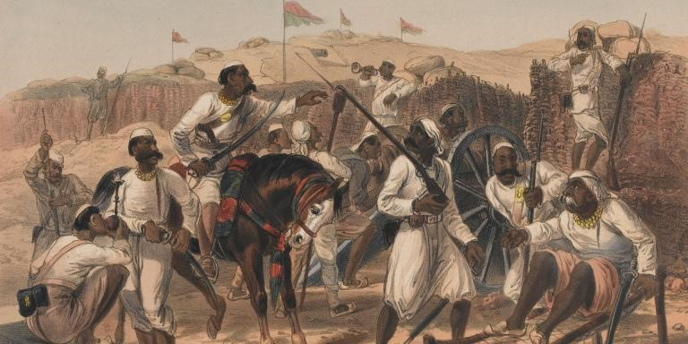

What can the 1857 Indian ‘Mutiny’ tell us about British attitudes to empire?
The colony of India was perhaps the most prized possession within the British Empire, thus making the Indian Rebellion of 1857-1858 its greatest adversity. From the events causes, to its unfolding, to its aftermath, one can derive the overall mind-set that the British had when controlling their Empire, as well as their views in regard to the residents of those colonies. It must be noted that the British Empire covered a third of the world at its peak, from India, Australia, Canada to the Caribbean, meaning the inhabitants of these various colonies were of great diversity in terms of their conduct, characteristics and assortment. Another factor that must be recognised is that Britain itself was divided by class and wealth and had different views on Empire with the historical optimism that surrounded it beginning to dwindle from the start of the 19th century – much of which was as a result of the Indian Rebellion. Nonetheless, these factors do not negate the single-minded attitudes of the governing forces of the British Empire towards their colonies, and only serve to further the argument that the essay intends to make; Empire was justified and preserved by the underlying British attitude of racial superiority and seeing it as their responsibility to civilise its inhabitants.
The term ‘mutiny’ has been attributed to the events of 1857, which is in itself indicative of British attitudes towards the event, showing that the British saw it as treason, rather than an uprising. Historian William Dalrymple argued that although the term ‘mutiny’ may be too narrow, a ‘War of Independence’ is too wide, due to the undeniable and unsparing savagery that the Indian sepoys inflicted upon innocent British residents within India. For this reason, it is crucial to categorise the nature of the events within its truthful place within history, which will in turn convey the British attitudes towards it in a brighter light. Many historians point towards the greasing of the Enfield rifle with pig and cow fat which agitated the religious values of Hindu and Muslim sepoys as the cause, and indeed this was an immediate trigger for the revolt, but focusing on this issue ignores the wider political, economic and social exploitation of the British within India which created the discontent. The British economic policies of heavy taxation, evictions, discriminatory tariff policy against Indian products and eradication of traditional handicrafts. The British economic policy crippled all sections Indian society, but this was to their disregard, holding British capitalist interests as their priority. The social reforms were imposed with the belief that the British were reforming Indian society by removing practices such as sati, infanticide and the re-marriage of widows, but this caused discontent amongst the Hindus. The British went a step further in their social reforms, propagating missionary work and introducing English education – facilitating conversion to Christianity. The policies were imposed with the belief of social reform, but orthodox Indian’s believed it to be interference with their religious practices. Furthermore, in the military Indian soldiers were considered inferior and were not only miss-treated by high officers but the high ranks within the army were exclusively reserved for British men. These dogmatic laws that the British imposed on the Indian’s caused immense discontent, and were revealing of several aspects; firstly, the priorities of the British were apparent; the capitalist elite’s interests took precedence over the millions of colonial subjects, justifying their detrimental economic policies. Secondly, the British’s belief of enlightening its colonial subjects is evident through the social and religious reforms and social divide within the military. Thirdly, the term ‘rebellion’ is certainly far more appropriate considering the prolonged oppression inflicted on the Indians – making the British view that it was a mutiny significant within itself.
The British’s labelling of the event as a ‘mutiny’ indicates a betrayal and treachery on the Indians behalf against the favour of which the British had bestowed upon them. This belief is seen not only through the unsympathetic retribution that followed, but more so the representation of the events that were transmitted back to Britain. Perhaps the most telling of British attitudes are the picture illustration of the events. One of the most famous illustrations is the “Massacre of English Officers and their Wives at Jhansi” , which captures every graphic detail of the Indian sepoys slaughtering the wives and babies of the soldiers in front of them, reflecting the merciless and inhumane nature of the Indian sepoys. This would be truly horrifying for a British public, who would question the humanity of those that would carry such acts, such as holding a baby from their feet as they intend to murder them in front of their parents. Another illustration that furthers this narrative of the Indian’s inherent barbarism, was that of Harper’s Weekly’ named “English Homes in India, 1857” where two Indian men are seen intruding a mother and her baby as she breast feeds, the sexual undertone implying they were raped before being murdered, furthers the animalistic portrayal of Indian mutineers, in an attempt to illicit the disgust of its audience. The fact that it was illustrated in Harper’s Weekly is significant, in that it shows that British attitudes towards Empire was one that had spread into the Americas – a former British colony that gained independence, now sharing the attitude of a superiority complex a century later. There are several other illustrations with similar intentions, but they all reveal the same attitude; the British attempted to portray the Indian mutineers as being inherently barbarous and having no moral compass or understanding of humanity, as depicted by their animalistic manner of ‘rebellion’, to justify their ruthless retribution as well as making the rest of the world see the event as a ‘mutiny’, and not a rebellion.
A further point to inspect is the gender dynamics. Taking into consideration the considerable gender imbalance within Britain during the 19th century, when comparing the attitudes towards women and the attitudes towards those within British colonies, it further reveals how the British viewed their colonial subjects. The illustration from Harper’s Weekly reveals a sight that would be deeply troubling for a British citizen; a foreign male within the private sphere of a female. This highlights a key point of public British attitude; a male colonial subject was of lesser grade than a British female, who was in turn lower in status than a British male. This gender dynamic created by the British is captured by the depiction of “Miss Wheeler Defending Herself Against The Sepoys At Cawnpore”. Margaret Wheeler, daughter of General Hugh Wheeler, is seen fiercely defending herself against the sepoys, protecting her honour from violation at the hands of the sepoys as well as graciously upholding the virtue of the British imperial elite. The significance of this is that British dignity and honour extended to women when colonial subjects were brought into the picture – something extraordinary when considering the immense gender inequality of the 19th century – and furthers the lowly British perception of their colonial subjects.
Perhaps what was most telling of the single-minded attitude of the British was the ‘Christian mission’, they sought to impose upon the Indians, and the Times news report in 1857 captures this best. “There can be no doubt that the object for which we ought to consider ourselves to hold India is the future of Christianity and civilisation of the people”. Taking into consideration the establishment of The Times as a widely read newspaper within Britain, this makes the article’s unwavering belief in thinking “our religion [Christianity] true and theirs [Hinduism] false” all the more striking, as well as outlining that this attitude was not confined to a minority, but commonly accepted amongst large portions of the British public. The prejudice towards the Hindus is not only unrelenting, but the calm manner in which it is said further reflects how unswerving the British were in their prejudice, being convinced that Hinduism was a “meaningless distortion and chaotic dream”, and that any sane mind should open their hearts up to Christianity, believing that no progress, civilisation or success can take place without Christianity attached to it. But what is perhaps more damning in this inherent British prejudice is the unyielding gratitude in which they feel the Indians are bound to, “We flattered them so long that now the least thing is felt as a grievance”. Despite the detrimental economic and social policies which crippled Indian society, the British still felt as though they were due constant gratefulness and loyalty, which perfectly epitomises the uncompromising and stubborn belief in their inherent superiority.
One may then ask; how did the civilised and advanced ruling forces of Britain be so single-minded in their ruling over colonies? Certainly, there were many inconsistencies, even amongst the most liberal of thinkers, such as John Stuart Mill who firmly believed in freedom of speech and thought yet advocated the British Empire. This question can be answered by analysing how the British viewed race and eugenics, and then the deep-rooted prejudice amongst the British – which led to the ill-treatments of the Indians and other colonial subjects – can be made more comprehensible. The mid-19th century saw the outburst of racial science, which saw the move away from the orthodox belief that human races originated from one family, moving to the idea of heterogeneity of mankind and that there were natural differences between races fixed in human biology. This paved the way for racial scientists, such as Robert Knox, to preach the superiority of the ‘Saxon race’, and the inferiority of those of African and Asian descent. He believed “race is everything. Literature, science, art, in a word, civilisation depend on it.” Therefore, the institutionalising of philanthropic study in the 1840s, a few decades before the Indian Rebellion, and the outburst of racial discourse within Britain must be seen in conjunction with how the British viewed their colonies. Race became pervasive within 19th century Britain, and the Empire shaped and drove these racial attitudes and beliefs. But a crucial point to note is that arguments about race were arguments about rights; who had the capacity to and ability to govern? Catherine Hall notes the inconsistencies of political rights in the imperial system, where at ‘home’ they sought to expand political rights to the vote, but in the colonies, only as far as the rule of law. The contradiction of political liberty and coercion is mentioned by Sir John Seeley: “How can the same nation pursue two lines of policy so radically different without bewilderment, be despotic in Asia and democratic in Australia… and at the same time in the West be foremost champions of free thought and spiritual religion.” Thus, Britain’s policy making towards India – and by extension, the rest of their Empire – was justified by race; the policy of expansion, annexation and the mistreatment of the Indian subjects were all taking place at a time when Britain was making considerable progressive reforms on liberty at ‘home’; a dichotomy which shows the deep-rooted views on race being pivotal in the ruling and preservation of the Empire.
Indeed, the Indian Mutiny was revealing of several aspects of British attitudes; the precedence of capitalist interest took above its colonial subjects, the uncompromising belief in Christianity being necessary for the progression and civilisation of nations, and the unyielding gratitude they expected as a result of their reform and civilisation, which the British had took upon themselves to impose. But this all ties back to the inherent prejudice of the British towards the colonies, which drove its belief in civilising its people.